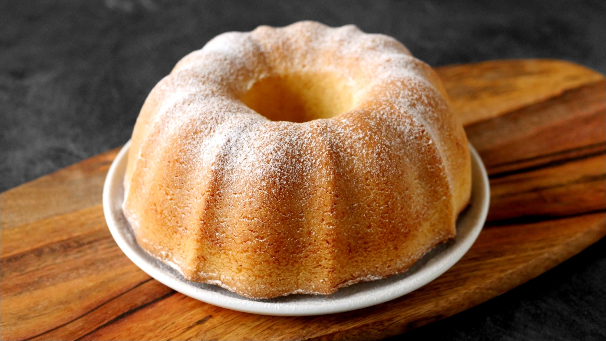

Bábovka
Suroviny
- 1 a půl hrnku polohrubé mouky
- 1 hrnek cukru krystal
- 2 vejce velikosti L
- 1 prášek do pečiva
- 1 vanilkový cukr
- 1/2 mléka
- 1/2 slunečnicového oleje
- rozinky
- rum
- kakao
Postup
- Smícháme sypké suroviny s výjimkou kakaa a promícháme.
- Přidáme vejce, olej a mléko a promícháme.
- Přidáme rozinky a rum a zamícháme je.
- Formu vymažeme olejem a vysypeme moukou (hrubou).
- Nalejeme polovinu těsta.
- Do druhé poloviny přidáme kakao a přilejeme do formy.
- Nastavíme troubu na 170 - 180° a pečeme 45 minut (podle velikosti bábovky a typu trouby)